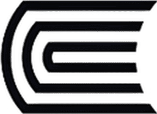

Sistema de Gestión de Calidad
Excelencia que transforma
Universidad Continental — Dirección de Calidad Académica

Portal de acceso institucional
Ingresa tus credenciales para continuar
Acceso exclusivo para personal autorizado de la Universidad Continental. Toda actividad es registrada.